GPU Architecture and Execution Model
Contents
- Overview
- Hardware Architecture
- CPU and GPU
- Inside a GPU
- NVIDIA vs AMD Terminology
- CUDA Execution Model
- Grid, Block, Warp and Thread
- SIMT
- Warp Scheduling and Latency Hiding
- Lentency Hiding
- Occupancy
- Practical CUDA Experiments
- Inspect GPU hardware
- Vector Addition and Block Size
- Performance Limit
- The Roofline model
- GPU Profiling
- Nsight Systems
- Nsight Compute
- Quiz
Understand how CUDA code maps onto physical GPU hardware, how GPU resources are utilized, and why different kernel configurations produce different performance.
Overview
Three major concepts:
- Hardware: GPU, SM, warp scheduler, execution units.
- Software execution model: Grid, block, warp, thread.
- Performance behaviour: Latency, throughput, occupancy, utilization.
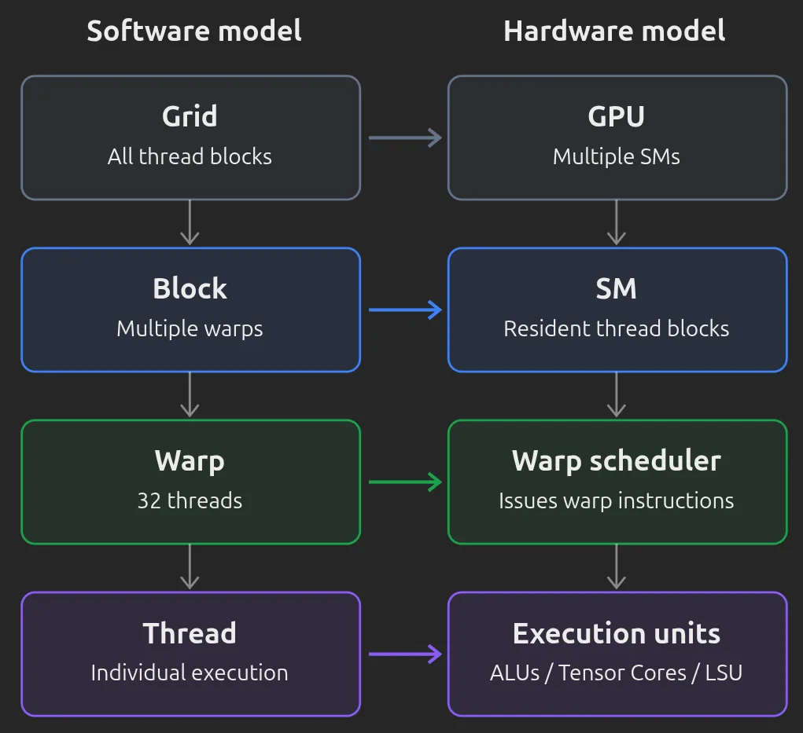
Hardware Architecture
CPU and GPU
A CPU is designed to minimize the execution latency of individual tasks; A GPU is primarily designed to maximie the throughput of many parallel tasks.
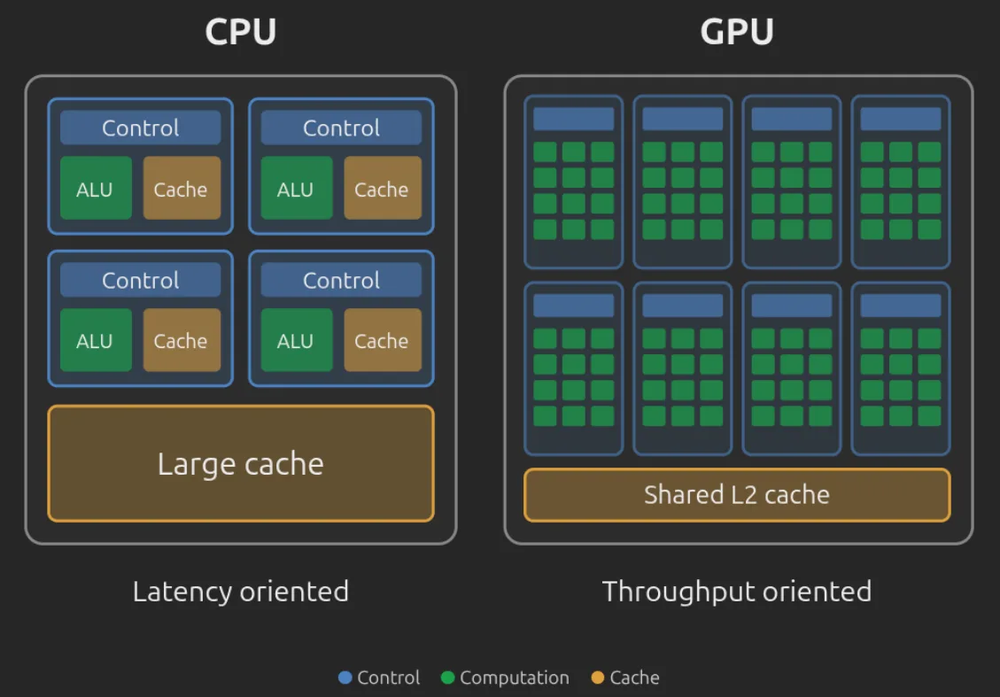
Inside a GPU
An NVIDIA GPU contains multiple Streaming Multiprocessors (SMs). Each SM is an independent hardware execution resource capable of managing many concurrent threads.
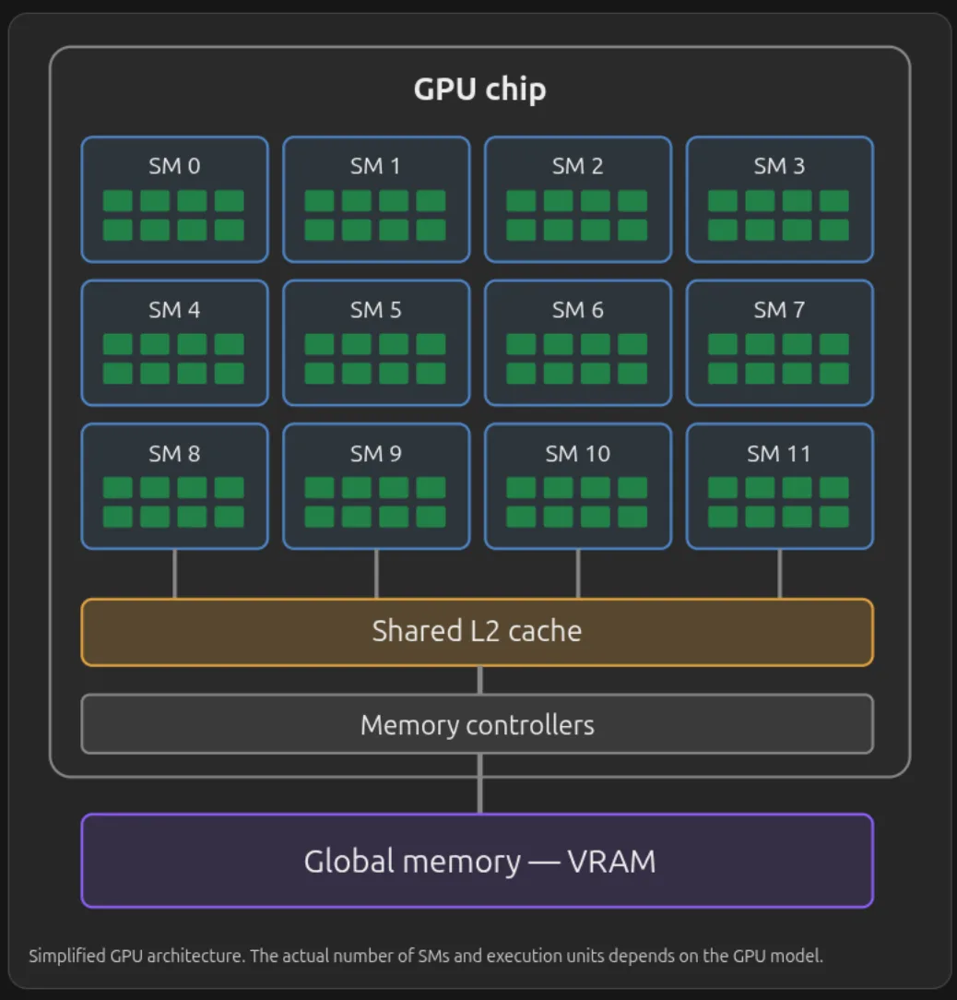
A SM contains hardware resources:
- CUDA cores: Arithmetic and logical operations
- Tensor cores: Matrix multiply-accumulate operations
- Warp schedulers: Select eligible warps for instruction issue
- Registers: Fast per-thread storage
- Shared memory: On-chip storage shared by threads in a block
- L1 cache: Local caching of memory accesses
- Load/store units: Memory operations
- Special function units: Specialized mathematical operations
NVIDIA vs AMD Terminology
| NVIDIA | AMD |
|---|---|
| Streaming Multiprocessor | Compute Unit |
| CUDA core | Stream processor |
| Warp | Wavefront |
| 32 threads per warp | Typically 32 or 64 lanes |
| Shared memory | Local Data Share |
| Tensor Core | Matrix Core |
| MMA instruction | MFMA instructions |
CUDA Execution Model
Grid, Block, Warp and Thread
vectorAdd<<<1024, 256>>>(a, b, c, N);
This creates:
- 1024 thread blocks.
- 256 threads per block.
- 262144 logical threads.
- 8 warps per block.
- 8192 warps in total.
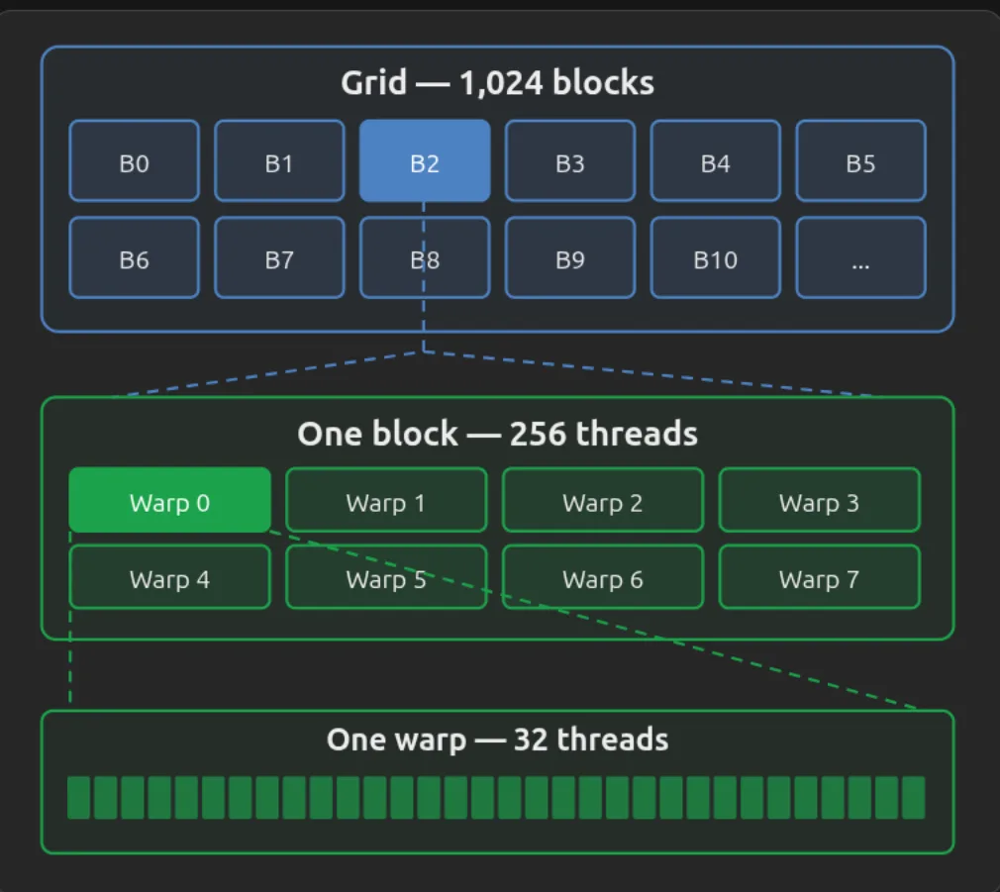
Tail Effect
When the end of a kernel's execution, there are not enough remaining thread blocks or warps to fully utilize the GPU. As a result, some GPU processing units become idel while others are still working, reducing overall hardware utilization.
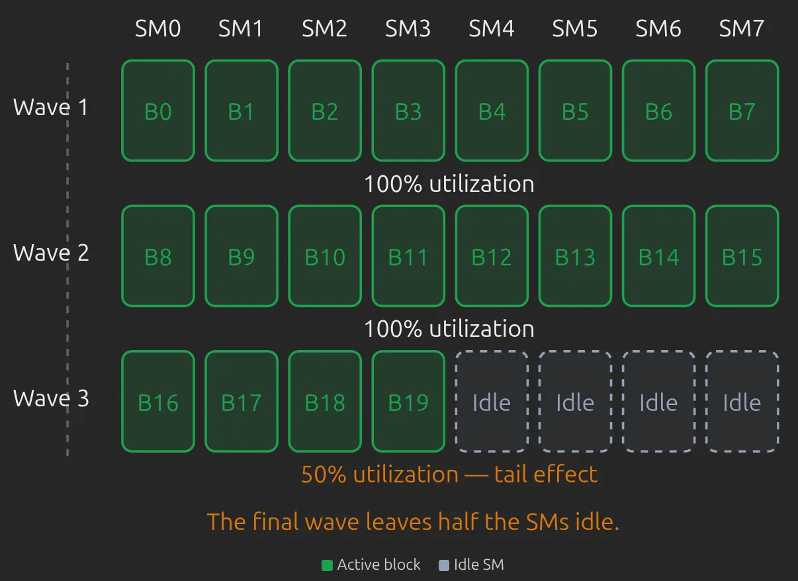
Tail effect can also occure when different blocks take different amounts of time to complete. This is common in irregular workloads, such as: point cloud processing, sparse matrix multiplication, graph processing, mixture of experts, variable-length sequence processing.
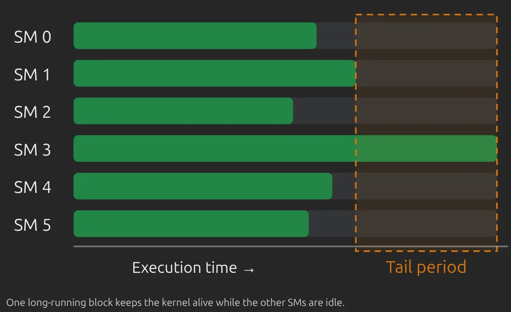
How to reduce the tail effect:
- Grid size tuning: reduce partially filled execution waves
- Block size tuning: adjust concurrent block capacity
- Smaller tiles: increase the number of independent tasks
- Split-K GEMM (General Matrix Multiplication): Split the K dimension to expose more parallelism
- Stream-K GEMM: Distribute GEMM computation more evenly
- Persistent kernels: dynamically distribute work among resident blocks
- Load balancing: reduce differencs in block execution time
SIMT
Threads within a warp generally execute a common instruction on different data.
Warp divergence
int tid = threadIdx.x;
if (tid % 2 == 0)
result[tid] = a[tid] + b[tid];
else
result[tid] = a[tid] * b[tid]
It occurs when threads within the sam warp follow different execution paths becauses of conditional branches. It reduces parallel execution efficiency.
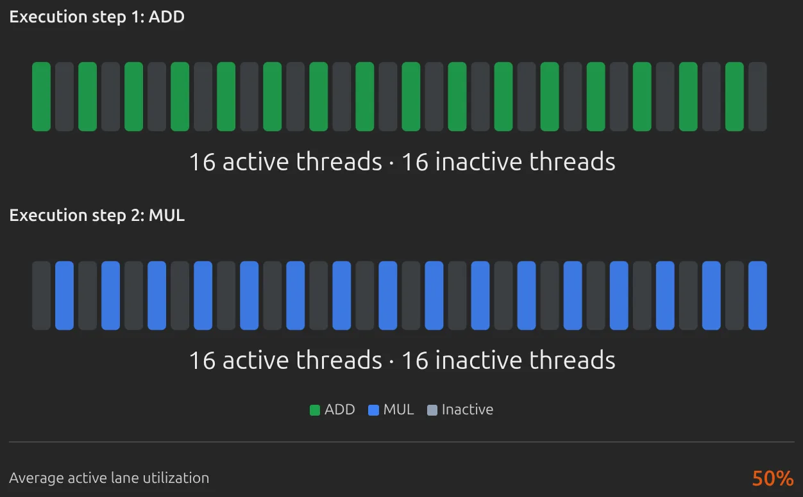
Branching does not necessarily cause warp divergence, Divergence is a problem within a warp, not between warps.
Case A: divergent branches
if (threadIdx.x % 2 == 0)
operationA();
else
operationB();
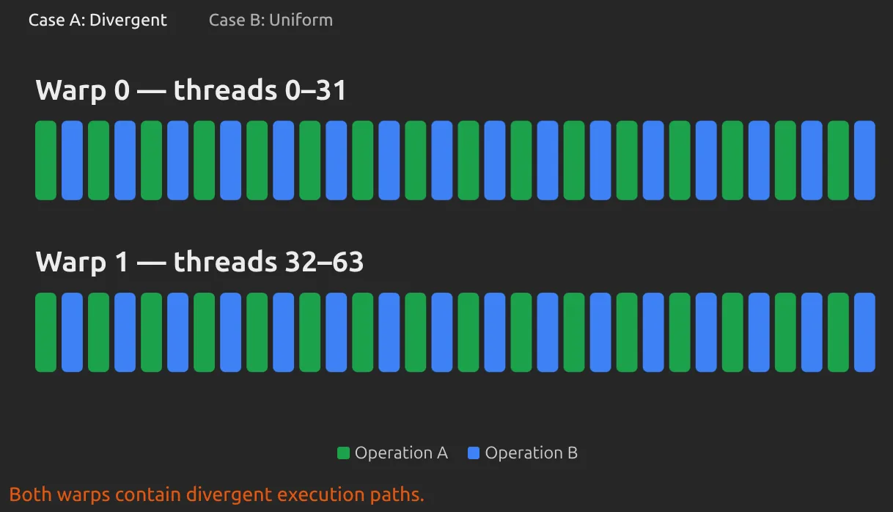
Case B: warp-uniform branching
if ((threadIdx.x / 32) % 2 == 0)
operationA();
else
operationB();
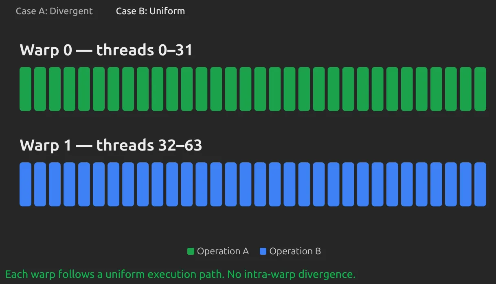
Loop divergence
Divergence is not limited to if-else statements, Loops can also cause divergence.
int tid = threadIdx.x;
for (int i = 0; i < lengths[tid]; i++)
{
process(i);
}
If different threads have different loop lengths, some threads finish earlier than others:
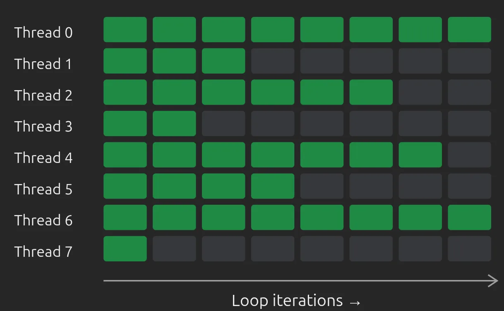
This is particularly common in point cloud processing, graph algorithms, ray tracing and sparse matrix computation.
How to reduce warp divergence
| Technique | Principle |
|---|---|
| Warp-aligned branching | Ensure threads within a warp take the same path |
| Data sorting | Group elements with similar computational behavior |
| Branchless programming | Replace suitable branches with arithmetic or selection |
| Workload bucketing | Group tasks with similar execution lengths |
| Kernel specialization | Use separate kernels for different types of work |
| Prediction | Execute short conditional instructions using predictes. |
How to detect warp divergence
Using NVIDIA Nsight Compute, pay attention to metrics such as:
- Branch Efficiency: proportion of non-divergent branch targets
- Avg. Active Threads Per Warp: average numbers of active threads
- Avg. Not Predicted Off Threads Per Warp: threads actually participating in instructions
- Achieved Occupancy: Resident warp utilization. a separate concept.
Warp Scheduling and Latency Hiding
Lentency Hiding
Suppose an operation depdends on the loaded value, if the data is not cached, the warp may need to wait hundreds of clock cycles. Instead of leaving the execution resources idle, the warp scheduler can select another eligible resident warp. This is called latency hiding.
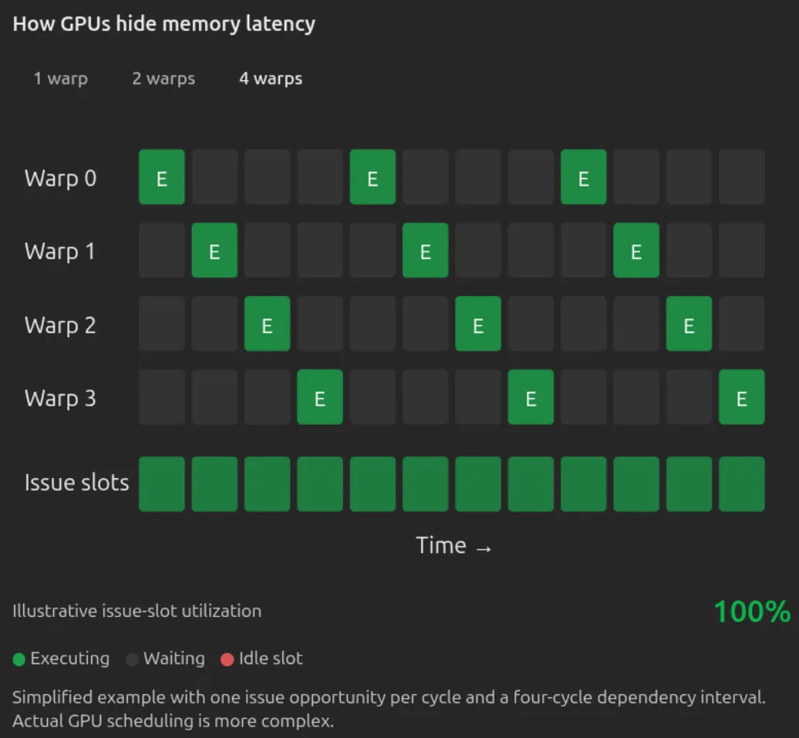
The GPU does not eliminate memory latency, it attempts to perform useful work while other warps are waiting.
Occupancy
Occupancy measures how many warps are resident on an SM relative to the maximum supported by that SM.
Occupancy = \frac{Resident warps per SM}{Maximum warps per SM}
Occupancy is limited by several hardware resources: registers, shared memory, maximum resident blocks, maximum resident threads, and maximum resident warps.
Think of an SM as a factory with limited resources. Every block entering the factory requires some of those resources:
- Registers: each thread needs registers
- Shared memory: each block may need shared memory
- Thread/warp capacity: each SM supports a limited number of threads and warps
- Block capacity: each SM supports a limited number of blocks
Does higer occupancy always mean higher performance?
No. For example, register tilling in GEMM may increase register usage and reduce occupancy, but imrprove performance bacuase it increases data reuse and reduces memory accesses; Occupancy is a means of enabling latency hiding, not the ultimate performance objective; A kernel with 50% occupancy can outperform a kernel with 100% occupancy.
Consider three hypothetical GEMM implementations:
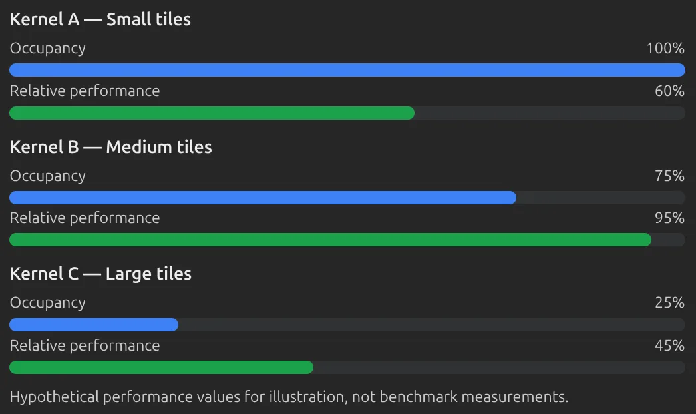
Kernel B is the fastest, even though its occupancy is only 75%. It may have better data reuse, fewer memory accesses and sufficient warps to hide latency. Occupany is a means to improve performance, not the final optimization objective.
Practical CUDA Experiments
Inspect GPU hardware
Show full codeCollapse code
#include <cuda_runtime.h> // CUDA Runtime API, including device queries and error codes.
#include <cstdio> // C++ standard header for printf, which formats console output.
int main() {
// This program runs on the host (CPU). It queries the GPU without launching a kernel.
cudaDeviceProp prop;
// Device 0 is the first GPU visible to the CUDA application. On success, CUDA
// writes its properties into prop through the pointer &prop.
cudaError_t err = cudaGetDeviceProperties(&prop, 0);
// Check the status before reading prop. cudaGetErrorString turns a CUDA
// error code into readable text, and returning 1 signals failure to the shell.
if (err != cudaSuccess) {
printf("Failed to get device properties: %s\n", cudaGetErrorString(err));
return 1;
}
// Compute capability is the GPU's CUDA architecture version, written as
// major.minor. It determines which CUDA hardware features are supported.
printf("Device name: %s\n", prop.name);
printf("Compute capability: %d.%d\n", prop.major, prop.minor);
// An SM (streaming multiprocessor) runs thread blocks. A block's threads
// are grouped into warps, which are the units the SM schedules.
printf("SM count: %d\n", prop.multiProcessorCount);
printf("Warp size: %d\n", prop.warpSize);
// The block limit applies to a single block. The SM limit counts resident
// threads across all blocks on one SM. Registers and shared memory used by
// each block can reduce the number of blocks that fit on an SM at once.
printf("Max threads per block: %d\n", prop.maxThreadsPerBlock);
printf("Max threads per SM: %d\n", prop.maxThreadsPerMultiProcessor);
printf("Registers per SM: %d\n", prop.regsPerMultiprocessor);
printf("Shared memory per SM: %.2f KiB\n", prop.sharedMemPerMultiprocessor / 1024.0);
// Memory capacities are reported in bytes. Dividing by powers of 1024
// converts them to KiB (above), MiB, or GiB for display.
// L2 is a cache shared across SMs. Global memory is the GPU's main memory,
// and the bus width gives the number of bits in its memory interface.
printf("L2 cache: %.2f MiB\n", prop.l2CacheSize / 1048576.0);
printf("Global memory: %.2f GiB\n", prop.totalGlobalMem / 1073741824.0);
printf("Memory bus width: %d bits\n", prop.memoryBusWidth);
return 0;
}
Compile and execute:
nvcc -O3 -arch=sm_120 device_info.cu -o device_info
./device_info
$ ./device_info
Device name: NVIDIA GeForce RTX 5080 Laptop GPU
Compute capability: 12.0
SM count: 60
Warp size: 32
Max threads per block: 1024
Max threads per SM: 1536
Registers per SM: 65536
Shared memory per SM: 100.00 KiB
L2 cache: 48.00 MiB
Global memory: 15.47 GiB
Memory bus width: 256 bits
Vector Addition and Block Size
C = A + B
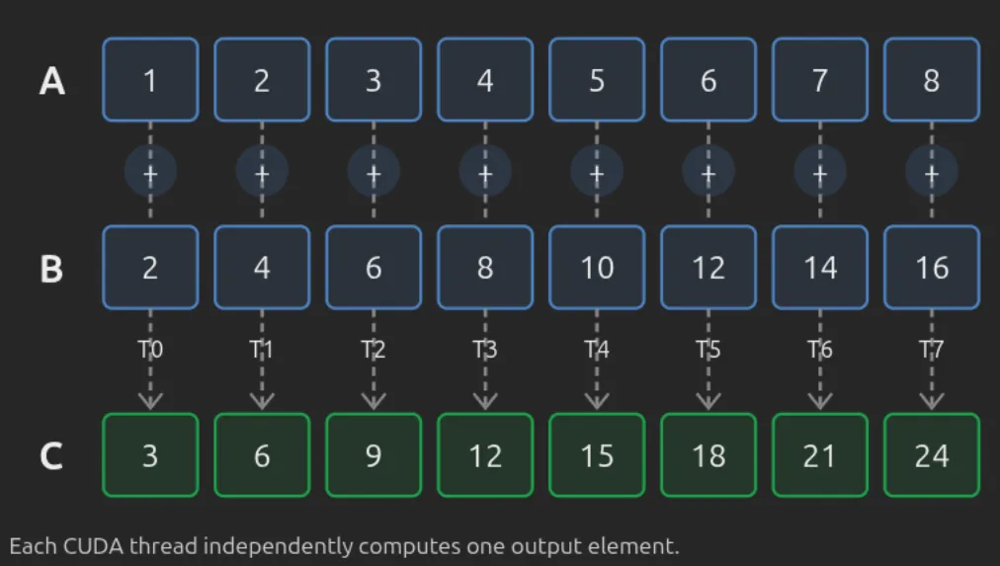
Show full codeCollapse code
#include <cuda_runtime.h> // CUDA memory, device, event, and occupancy APIs.
#include <cstdio> // printf, fprintf, and stderr for console output.
#include <cstdlib> // atoi for parsing a block size, plus exit and EXIT_FAILURE.
#include <vector> // std::vector owns the arrays in host memory.
#include <cmath> // std::fabs computes the absolute error.
// Run a CUDA API call once and exit on failure. __FILE__ and __LINE__ identify
// the call site. The do/while wrapper lets CHECK behave like one statement.
#define CHECK(call) do { \
cudaError_t err = (call); \
if (err != cudaSuccess) { \
fprintf(stderr, "%s:%d: %s\n", \
__FILE__, __LINE__, \
cudaGetErrorString(err)); \
exit(EXIT_FAILURE); \
} \
} while (0)
// __global__ marks a kernel that the host launches and GPU threads execute.
// a, b, and c point to device memory.
__global__ void vectorAdd(
const float* a,
const float* b,
float* c,
int n)
{
// A block starts at blockIdx.x * blockDim.x. threadIdx.x is this thread's
// offset within that block, so each thread gets a different array index.
int i = blockIdx.x * blockDim.x + threadIdx.x;
// Rounding up the grid size can leave extra threads in the final block.
if (i < n)
c[i] = a[i] + b[i];
}
int main(int argc, char** argv) {
// 1 << 24 is 2^24 elements. CUDA allocation and copy sizes are in bytes.
const int N = 1 << 24;
const size_t bytes = N * sizeof(float);
const int iterations = 100;
// Reuse one CPU array of ones to initialize both GPU input arrays.
std::vector<float> h(N, 1.0f);
std::vector<float> result(N);
float *a, *b, *c;
// cudaMalloc writes a device pointer through its first argument.
CHECK(cudaMalloc(&a, bytes));
CHECK(cudaMalloc(&b, bytes));
CHECK(cudaMalloc(&c, bytes));
// cudaMemcpy takes the destination first. data() exposes the vector's
// contiguous CPU buffer for the host-to-device copy.
CHECK(cudaMemcpy(a, h.data(), bytes,
cudaMemcpyHostToDevice));
CHECK(cudaMemcpy(b, h.data(), bytes,
cudaMemcpyHostToDevice));
// Query CUDA device 0 for its block and SM thread limits.
cudaDeviceProp prop;
CHECK(cudaGetDeviceProperties(&prop, 0));
// CUDA events mark points in a stream and can measure elapsed GPU time.
cudaEvent_t start, stop;
CHECK(cudaEventCreate(&start));
CHECK(cudaEventCreate(&stop));
int blockSizes[] = {32, 64, 128, 256, 512, 1024};
printf("Block Grid Time(ms) GB/s GFLOPS Occ(%%)\n");
for (int block : blockSizes) {
// An optional command-line argument selects one block size to test.
if (argc > 1 && block != atoi(argv[1]))
continue;
if (block > prop.maxThreadsPerBlock)
continue;
// Round up so the grid covers all N elements.
int grid = (N + block - 1) / block;
// Warm up before timing. <<<grid, block>>> sets the number of blocks
// and the number of threads per block in this one-dimensional launch.
for (int i = 0; i < 10; ++i)
vectorAdd<<<grid, block>>>(a, b, c, N);
// Check for launch errors, then wait for GPU work and check for
// execution errors before starting the timer.
CHECK(cudaGetLastError());
CHECK(cudaDeviceSynchronize());
// The events and kernels are queued in order in the default stream.
// The stop event completes after the last kernel. The measured
// interval excludes the warm-up and host-device copies.
CHECK(cudaEventRecord(start));
for (int i = 0; i < iterations; ++i)
vectorAdd<<<grid, block>>>(a, b, c, N);
CHECK(cudaGetLastError());
CHECK(cudaEventRecord(stop));
CHECK(cudaEventSynchronize(stop));
float elapsed;
CHECK(cudaEventElapsedTime(&elapsed, start, stop));
// The event API reports milliseconds for the whole batch.
float ms = elapsed / iterations;
double seconds = ms / 1000.0;
// Effective bandwidth counts two input reads and one output write
// per element. Actual traffic to GPU main memory can differ.
double bandwidth =
(3.0 * bytes) / seconds / 1e9;
// Each element performs one floating-point addition.
double gflops = N / seconds / 1e9;
// Estimate how many blocks of this kernel can reside on one SM at
// once. The last argument is dynamic shared memory per block in bytes.
int activeBlocks;
CHECK(cudaOccupancyMaxActiveBlocksPerMultiprocessor(
&activeBlocks, vectorAdd, block, 0));
// Convert resident blocks to resident threads and divide by the SM's
// thread capacity. This is theoretical occupancy.
double occupancy =
100.0 * activeBlocks * block /
prop.maxThreadsPerMultiProcessor;
// Copy the output back to CPU memory and check it against 1.0 + 1.0.
CHECK(cudaMemcpy(result.data(), c, bytes,
cudaMemcpyDeviceToHost));
for (int i = 0; i < N; ++i) {
if (std::fabs(result[i] - 2.0f) > 1e-6f) {
fprintf(stderr, "Incorrect result at %d\n", i);
return 1;
}
}
printf("%5d %7d %8.4f %7.2f %7.2f %6.1f\n",
block, grid, ms, bandwidth,
gflops, occupancy);
}
// Release the CUDA events and device allocations when the benchmark ends.
CHECK(cudaEventDestroy(start));
CHECK(cudaEventDestroy(stop));
CHECK(cudaFree(a));
CHECK(cudaFree(b));
CHECK(cudaFree(c));
return 0;
}
Compile
nvcc -O3 -arch=sm_120 -lineinfo \
-Xptxas=-v vector_add.cu -o vector_add
-Xptxas=-v reports useful kernel resource information, include register usage, shared memory usage and register spilling.
ptxas info : 0 bytes gmem
ptxas info : Compiling entry function '_Z9vectorAddPKfS0_Pfi' for 'sm_120'
ptxas info : Function properties for _Z9vectorAddPKfS0_Pfi
0 bytes stack frame, 0 bytes spill stores, 0 bytes spill loads
ptxas info : Used 12 registers, used 0 barriers
ptxas info : Compile time = 1.443 ms
Run
$ ./vector_add
Block Grid Time(ms) GB/s GFLOPS Occ(%)
32 524288 0.3884 518.35 43.20 50.0
64 262144 0.3762 535.14 44.59 100.0
128 131072 0.3762 535.12 44.59 100.0
256 65536 0.3770 534.03 44.50 100.0
512 32768 0.3383 595.03 49.59 100.0
1024 16384 0.2721 739.97 61.66 66.7
The experiment processes 16777216 elements. Input and output metric are 64 MiB. Logical memory traffic per launch is 192 MiB. Floating-point operations are 16777216. Arithmetic intensity (AI) is 0.0833 FLOP/byte
FLOP = Floating-Point Operation
Arithmetic intensity is calculated as: AI = \frac{FLOPs}{Bytes transferred}
For vector addition: AI = 1 / (4 + 4 + 4); this is extremely low arithmetic intensity. So for sufficiently large arrays, we expect vector addition to be primarily memory-bandwidth-bound, rather than compute-bound.
For each thread:
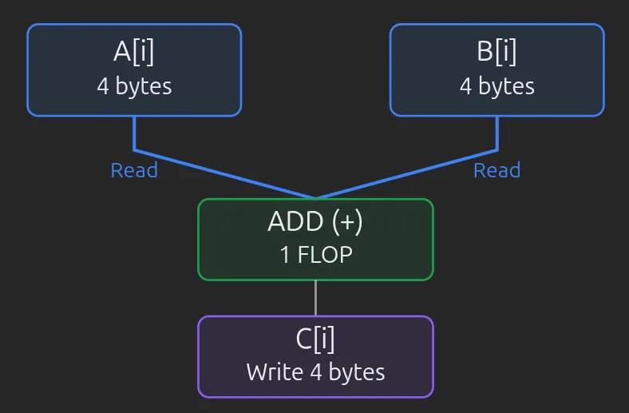
Performance Limit
The Roofline model
The Roofline model estimates the upper performance bound of a kernel based on arithmetic intensity, memory bandwidth and peak computational throughput.
P_{max} = min (P_{peak}, BW \times AI)
| Symbol | Meaning | Unit |
|---|---|---|
| (P) | Performance upper bound | FLOP/s |
| (P_{\text{peak}}) | Peak compute performance | FLOP/s |
| (BW) | Memory bandwidth | Byte/s |
| (AI) | Arithmetic intensity | FLOP/byte |
The analysis model helps you understand:
- Is kernel memory-bound or compute-bound?
- What is the maximum theoretical performance or the kernel?
- Should you optimize memory access or computation?
For example, suppose a GPU has 500 GB/s memory bandwidth, and 40 TFLOPS FP32 peak compute performance. The vector addtions performance limit is approximately:
500 \times \frac{1}{4 + 4 + 4} = 41.67 GFLOPS
Vector addition can only achieve approximately 41 GFLOS under this DRAM-bandwidth model. This does not mean the kernel is poorly optimized, it may already be utilizing nearly all availabel memory bandwidth.
GPU Profiling
Nsight Systems
nsys profile --trace=cuda \
-o day1_vector_add \
./vector_add 256
# Display the summary:
nsys stats day1_vector_add.nsys-rep
** CUDA API Summary (cuda_api_sum):
Time (%) Total Time (ns) Num Calls Avg (ns) Med (ns) Min (ns) Max (ns) StdDev (ns) Name
-------- --------------- --------- ------------ ------------ ---------- ----------- ------------- ------------------------------
76.2 208,763,213 3 69,587,737.7 31,219.0 21,952 208,710,042 120,483,449.9 cudaMalloc
13.8 37,802,154 1 37,802,154.0 37,802,154.0 37,802,154 37,802,154 0.0 cudaEventSynchronize
4.7 12,912,931 3 4,304,310.3 4,193,941.0 3,265,959 5,453,031 1,097,705.3 cudaMemcpy
3.4 9,359,466 1 9,359,466.0 9,359,466.0 9,359,466 9,359,466 0.0 cuLibraryLoadData
1.3 3,672,771 1 3,672,771.0 3,672,771.0 3,672,771 3,672,771 0.0 cudaDeviceSynchronize
0.2 612,032 3 204,010.7 229,125.0 139,194 243,713 56,604.8 cudaFree
0.2 540,124 110 4,910.2 2,124.0 1,924 299,138 28,313.9 cudaLaunchKernel
0.0 111,355 110 1,012.3 70.0 60 101,482 9,667.5 cuKernelGetName
0.0 9,348 2 4,674.0 4,674.0 381 8,967 6,071.2 cudaEventCreate
0.0 8,636 2 4,318.0 4,318.0 1,733 6,903 3,655.7 cudaEventRecord
0.0 3,046 1 3,046.0 3,046.0 3,046 3,046 0.0 cuModuleGetLoadingMode
0.0 2,414 2 1,207.0 1,207.0 230 2,184 1,381.7 cudaEventDestroy
0.0 421 1 421.0 421.0 421 421 0.0 cudaGetDeviceProperties_v12000
0.0 341 1 341.0 341.0 341 341 0.0 cuLibraryGetKernel
Nsight Compute
Nsight Compute provides detailed kernel-level hardware metrics.
ncu --set full \
--kernel-name regex:vectorAdd \
--launch-skip 10 \
--launch-count 1 \
-o day1_ncu \
./vector_add 256
It generates the profiling report file day1_ncu.ncu-rep. It can be opened using NVIDIA Nsight Compute: ncu-ui day1_ncu.ncu-rep, or view the report in Termial: ncu --import day1_ncu.ncu-rep
Quiz
- What is the difference between a CUDA core and an SM?
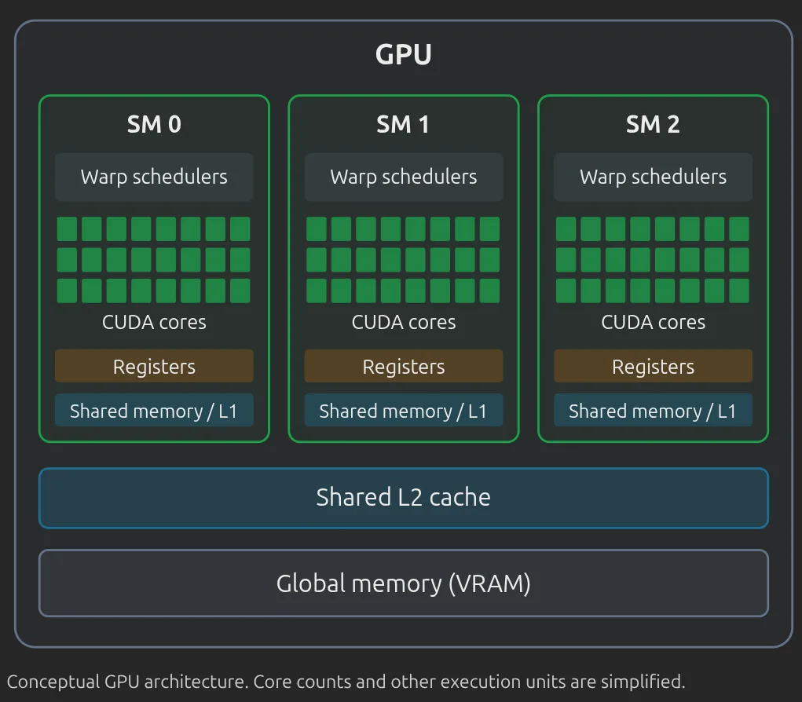
Think of an SM as a worshop and CUDA cores as arithmetic workers inside that workshop:
- GPU: entire factory
- SM: workshop
- CUDA core: arithmetic worker
- Warp scheduler: assigns instructions to execution unit
- Registers: fast storage for working data
- Shared memory: workspace shared by threads in a block.
- Why does a GPU launch more threads than it has physical execution units?
- Can a CUDA thread block execute across multiple SMs?
- Does 100% occupancy gurantee maximum performance?
- Why might increasing register usage improve performance?
Registers can enable data reuse, register tilling and instruction level parallelism. These benefits may outweigh reduced occupancy.
- What is warp divergence?
- Why is vector addition memory-bound?
It performs only one floating point operation per 12 logical bytes of FP32 memory traffic, resulting in very low arithmetic intensity.
- Why might a block size of 32 be slower than 256?
A 32 thread block contains only one warp. The hardware limit on resident blocks per SM may prevent enough warps from becoming resident, reducing latency-hiding capacity.
- How to systematically optimize an unfamiliar GPU kernel?
Verify correctness, establish a benchmark, profile the workload, identify the dominant bottleneck, form an optimization hypothesis, implement it, measure again and verify correctness.